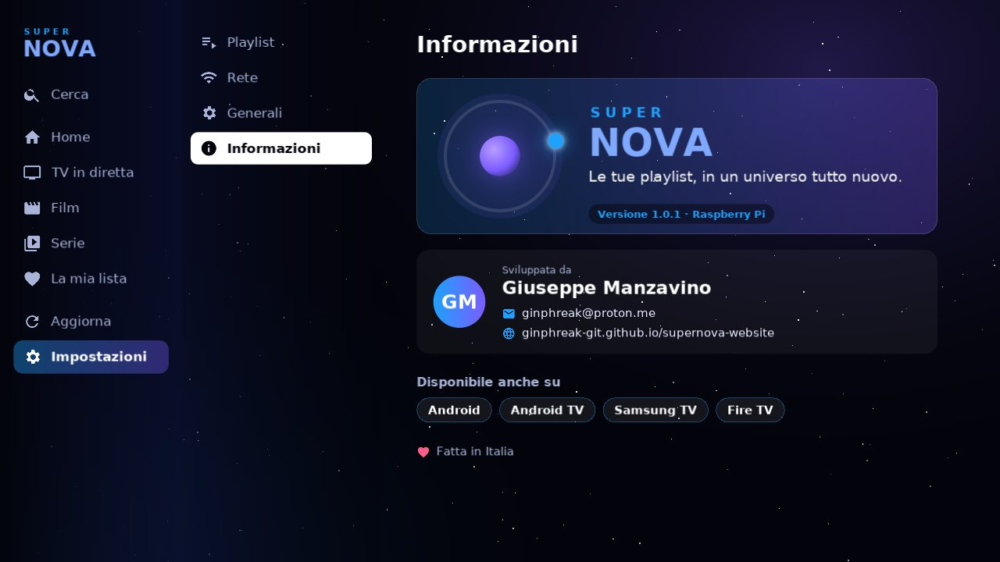
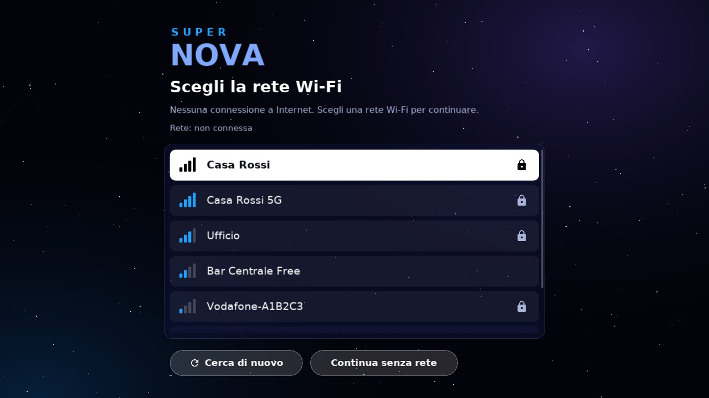
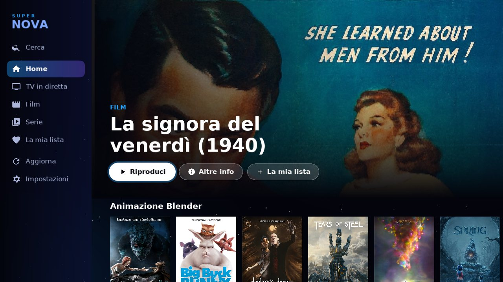
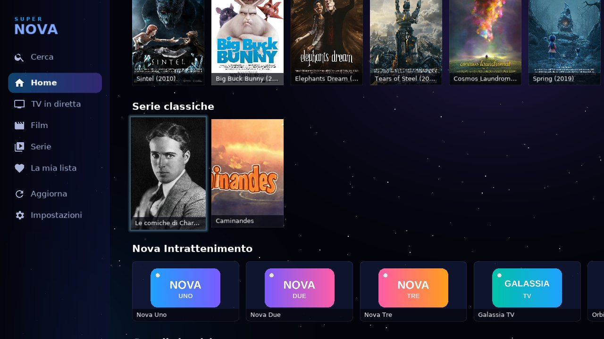
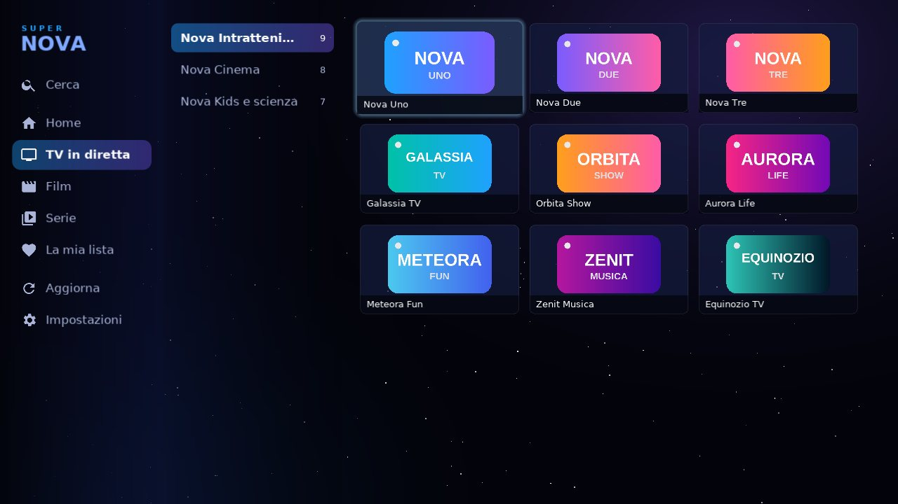

Vos playlists,
dans un univers
tout nouveau.
Super Nova IPTV transforme vos playlists M3U et vos comptes Xtream Codes en une véritable plateforme de streaming : bannière, rangées par catégorie, films, séries et TV en direct. La même expérience sur téléphone, tablette, Android TV, Fire TV, TV Samsung et même Raspberry Pi.
Important : Super Nova IPTV est uniquement un lecteur. Il ne fournit ni n'inclut aucune chaîne, film ou playlist : il vous faut votre propre source légitime, fournie par votre service.


Une seule app, tous les écrans de la maison
Choisissez l'appareil que vous avez déjà, ou transformez-en un en box IPTV dédiée : le même design, les mêmes gestes et le même lecteur partout.
Smartphone et tablette
- Une interface qui s'adapte à chaque écran, en portrait comme en paysage
- Sur tablette : menu latéral et groupes de la TV en direct à côté
- Android 8.0 et plus, seulement 2,2 Mo
Android TV
- Android TV, Google TV et box TV
- Tout à la télécommande : ouvrez la TV en direct et vous êtes déjà sur le premier groupe
- Peut démarrer toute seule à l'allumage de la TV
Fire TV
- Les nouveaux Fire TV sous Vega OS, comme le Fire TV Stick 4K Select
- Le même lecteur que la version Android : HLS et MPEG-TS sans accroc
- Pensée pour la télécommande, de l'accueil au lecteur
TV Samsung
- Smart TV Samsung sous Tizen, à partir de 2017
- Interface plein écran pensée pour la télécommande
- Lecteur natif Samsung si nécessaire
Raspberry Pi
- Transforme un Raspberry Pi en box IPTV dédiée
- On l'allume et c'est parti : rien à configurer
- Décodage vidéo matériel, télécommande de la TV ou infrarouge
Votre propre box IPTV, prête en une minute
Super Nova pour Raspberry Pi est un système complet et ultra-léger : insérez la microSD, branchez le Pi à la TV et quelques secondes plus tard vous êtes sur l'accueil. Pas de bureau, pas de fenêtres, rien à configurer : juste Super Nova, en plein écran.
- S'allume comme un appareil électroménager : démarre directement dans Super Nova, en mode kiosque
- Wi-Fi choisi à l'écran avec la télécommande : les réseaux sont mémorisés et le Pi se reconnecte tout seul
- La télécommande que vous avez déjà : celle de la TV via HDMI-CEC (si votre TV le permet), un récepteur infrarouge, un clavier ou une air mouse
- Vidéo fluide en haute définition avec décodage matériel et le même design de lecteur que les autres versions
- Test réseau intégré : vérifiez Internet et le serveur de votre fournisseur en un clic
- À l'épreuve des coupures : le système est en lecture seule, débranchez-le quand vous voulez
Testée sur Raspberry Pi 3 B+. Écrivez-nous et nous vous répondrons avec tous les détails pour obtenir l'image prête à écrire sur la microSD, ou la microSD prête à l'emploi.


Des listes énormes ? Aucun problème.
La plupart des lecteurs rament avec des playlists de dizaines de milliers de chaînes. Super Nova a été conçue à l'inverse : la vitesse d'abord.
N'affiche que ce que vous voyez
Même avec 50 000 contenus, seules quelques dizaines d'éléments sont à l'écran : rangées et affiches sont créées et chargées uniquement quand il le faut.
S'ouvre instantanément
La playlist est enregistrée sur l'appareil : au lancement, le catalogue est déjà prêt, sans tout retélécharger.
Ultra-légère
Environ 2,2 Mo sur Android : s'installe en un instant et reste fluide même sur les box d'entrée de gamme et les TV anciennes.
Respecte votre abonnement
Une seule connexion à la fois, reconnexion automatique sans insister : pas de blocage par votre fournisseur.
Tout ce qu'il faut, rien de plus
Conçue pour être rapide, belle et agréable à utiliser avec la télécommande.
M3U et Xtream Codes
Saisissez l'adresse de la playlist ou vos identifiants Xtream, même en scannant un QR code.
TV en direct
Liste des groupes avec les chaînes à côté, zapping avec haut/bas ou chaîne +/−.
Films et séries
Affiches, résumés, saisons et épisodes. « Reprendre » repart au bon moment.
Un lecteur soigné dans les moindres détails
Barre de progression, reprise à l'instant exact, mémoire tampon intelligente et reconnexion automatique quand le réseau fait des siennes.
Zapping et marathons
Changez de chaîne avec haut et bas et reconnaissez chaque chaîne à son logo et son nom. À la fin d'un épisode, « Épisode suivant » est là.
La même expérience partout
On l'apprend une fois, on l'utilise partout : le même design spatial et les mêmes gestes sur chaque appareil.
Ma liste et recherche
Enregistrez vos favoris et cherchez dans tout le catalogue : films, séries et chaînes.
Tampon réglable
Cinq niveaux de tampon pour les connexions instables : choisissez entre réactivité et stabilité.
Aucun pistage
Ni publicité ni statistiques : vos données restent sur votre appareil.
Une interface venue de l'espace
Ciel étoilé, nébuleuses et dégradés bleu-violet, sur chaque écran.





Prête en trois étapes
Installez l'app
Sur votre téléphone, tablette, Android TV, Fire TV, TV Samsung ou Raspberry Pi.
Ajoutez votre source
Adresse M3U ou serveur, identifiant et mot de passe Xtream Codes. Même avec un QR code.
Regardez
Parcourez films, séries et chaînes comme sur une plateforme de streaming.
Bon à savoir
L'app inclut-elle des chaînes ou des films ?
Non. Super Nova IPTV est un lecteur : elle ne fournit, ne vend ni ne suggère aucun contenu. Elle lit seulement la playlist ou le compte que vous saisissez, fourni par votre service.
Sur quels appareils fonctionne-t-elle ?
Téléphones et tablettes Android (Android 8.0 et plus), Android TV, Google TV et box TV, Fire TV sous Vega OS, Smart TV Samsung sous Tizen (depuis 2017) et Raspberry Pi.
Quels Fire TV sont compatibles ?
Les Fire TV sous le nouveau système Vega OS, comme le Fire TV Stick 4K Select. La version Fire TV arrivera sur l'Amazon Appstore.
Comment obtenir la version Raspberry Pi ?
Écrivez-nous à ginphreak@proton.me : nous vous répondrons avec les modalités et les détails. Vous pouvez recevoir l'image à écrire sur la microSD ou la microSD prête à l'emploi, même avec votre réseau Wi-Fi et votre source déjà configurés.
De quoi ai-je besoin pour la version Raspberry Pi ?
Un Raspberry Pi 3 B+ avec son alimentation, une microSD et un câble HDMI. Pour le piloter : la télécommande de la TV (si elle prend en charge HDMI-CEC), un petit récepteur infrarouge, un clavier ou une air mouse.
Fonctionne-t-elle avec de très grandes listes ?
Oui. Elle a été testée avec des playlists de 50 000 contenus : la liste s'ouvre en à peine plus d'une seconde et la navigation reste fluide, car l'app ne charge que ce qui est à l'écran.
Quels formats sont pris en charge ?
Playlists M3U/M3U8 et comptes Xtream Codes. Pour la vidéo : HLS (m3u8), MPEG-TS, MP4 et les autres formats pris en charge par l'appareil.
Mon abonnement n'autorise qu'une seule connexion : est-ce un problème ?
Non. L'app n'ouvre qu'un seul flux vidéo à la fois, le ferme quand vous quittez le lecteur ou changez d'app, et n'insiste pas si le serveur refuse.
Dans quelles langues est-elle disponible ?
Français, italien, anglais, espagnol et allemand. La langue est choisie automatiquement selon l'appareil et peut être modifiée dans les paramètres.
Mes données sont-elles envoyées quelque part ?
Non. La source, les favoris et la progression restent sur votre appareil. Pas de publicité, pas de statistiques.
Prêt à mettre votre TV en orbite ?
Informations, version Raspberry Pi, partenariats et revendeurs : écrivez-nous.